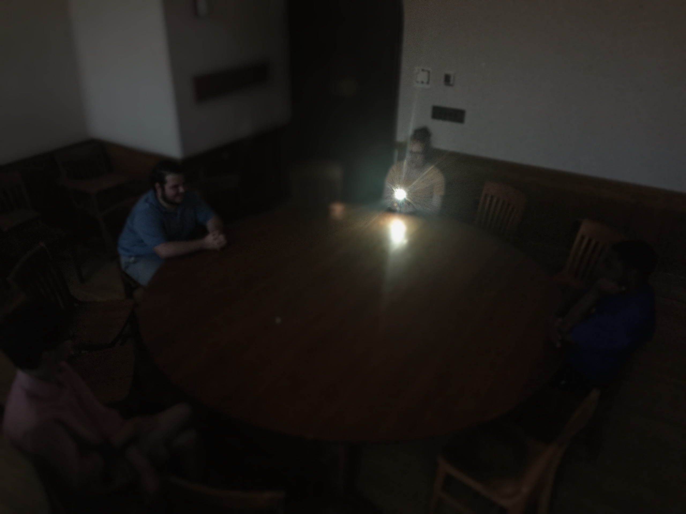

Presenting, Table Clock
Inspiration

How to Make a Table Clock
Materials
- A large circle table
- A timer
- A clock/watch
- 13 chairs
- 13 people
- 1 flashlight or a device that has a flashlight function1
So, how?
11. Find a place with a large circle-shaped table; no oval or tiny circle, just big circle table
22. Place 13 chairs if it doesn’t already have one; doesn’t matter what kind of chairs2
33. Choose one person who would be a timekeeper3
44. Place one person per seat4
55. Timekeeper gets a timer
66. Where timekeeper is sitting in the starting/restarting point of the clock
77. Whoever is sitting next to the timekeeper, whether on the left or right, the clock starts to go from whichever direction that the timekeeper chooses to go
88. Hand a device or a flashlight that is able to shine a bright light to the starting person
99. Timekeeper calls out whichever phrase or indicator that they want to use to inform the rest of the people the change of hour
1010. Flashlight/light shine-able device gets passed on every hour to the person sitting next to the current device holder5
1111. Make sure the timekeeper has an indicator that tells whether the time is AM or PM6
1212. Repeat/continue this until whoever stops using the table clock7